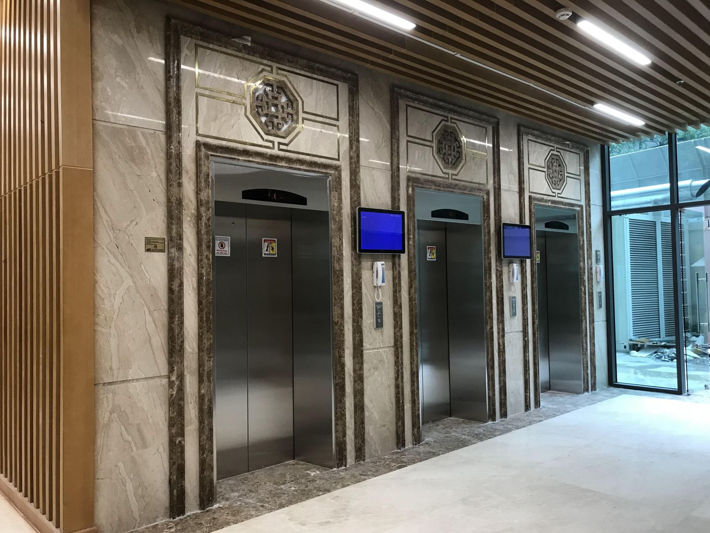

Những điều cần biết về thang máy chữa cháy chung cư
Bên cạnh Cửa chống cháy:chung cư,cửa chống cháy chung cư thì thang máy chữa cháy là một giải pháp kỹ thuật quan trọng trong công tác phòng cháy chữa cháy và cứu nạn cứu hộ trong các tòa nhà cao tầng. Thang máy chữa cháy được thiết kế để sử dụng trong trường hợp khẩn cấp nhằm đảm bảo an toàn và tăng khả năng sơ tán người dân trong trường hợp xảy ra cháy hoặc sự cố.
Những kiến thức về thang máy chữa cháy tại chung cư
Thang máy chữa cháy là một loại thang máy đặc biệt được thiết kế để sử dụng trong trường hợp khẩn cấp như cháy hoặc sự cố để đảm bảo sự an toàn và sơ tán nhanh chóng của người dân trong tòa nhà cao tầng. Là một phần quan trọng trong hệ thống phòng cháy chữa cháy và cứu hộ thang máy chữa cháy có chức năng khác biệt so với các thang máy thông thường trong các tòa nhà.
- Chức năng của thang máy chữa cháy: thang máy chữa cháy được thiết kế để sử dụng trong trường hợp khẩn cấp, như khi xảy ra cháy hoặc sự cố. Chúng giúp người dân và lực lượng cứu hộ di chuyển nhanh chóng và an toàn qua các tầng trong tòa nhà.
- Thiết kế và xây dựng: thang máy chữa cháy phải tuân thủ các quy định về an toàn nghiêm ngặt. Chúng phải có khả năng chịu lực, chịu nhiệt và chống cháy. Vật liệu sử dụng trong thiết kế thang máy chữa cháy cần đáp ứng các tiêu chuẩn chống cháy và không tạo ra khói độc hại. Kích thước của thang máy chữa cháy dựa trên tiêu chuẩn ISO 4190-1 (TCVN 7628-1). Đặc biệt kích thước chiều rộng của thang không được nhỏ hơn 1100 mm, chiều sâu không được nhỏ hơn 1400 mm. Đối với phần tải trọng định mức không được nhỏ hơn 630 kg như đã quy định trong tiêu chuẩn. Với phần lối vào cabin cần phải lớn hơn hoặc bằng 800 mm.
- Hệ thống báo cháy và dừng an toàn: thang máy chữa cháy cần được trang bị hệ thống báo cháy và hệ thống dừng an toàn. Hệ thống báo cháy sẽ được kích hoạt khi phát hiện có cháy và thông báo cho người điều khiển thang máy và cơ quan chức năng. Hệ thống dừng an toàn sẽ đảm bảo rằng thang máy dừng lại tại các tầng an toàn để người dùng có thể sơ tán.

- Kiểm tra và bảo dưỡng: thang máy chữa cháy cần được kiểm tra định kỳ và bảo dưỡng để đảm bảo hoạt động an toàn. Các hệ thống báo cháy, hệ thống dừng an toàn và các thiết bị khác liên quan đến thang máy chữa cháy cần được kiểm tra và bảo dưỡng thường xuyên.
- Hướng dẫn sử dụng: người dùng cần được hướng dẫn về cách sử dụng thang máy chữa cháy trong trường hợp khẩn cấp. Hướng dẫn này bao gồm cách mở cửa, cách gọi cứu hỏa và cách sử dụng thang máy an toàn.
Một số yêu cầu và quy định phổ biến liên quan đến thang máy chữa cháy
Vị trí lắp đặt: Thang máy chữa chát được bố trí lắp đặt trong giếng thang đảm bảo yêu cầu chống cháy và có sảnh đệm ngăn cháy trước khi vào thang máy ở mỗi tầng, được thiết kế đặc biệt và tuân thủ các quy chuẩn an toàn nghiêm ngặt. Nó phải có khả năng chịu nhiệt, chịu lực và chống cháy. Các vật liệu sử dụng trong thiết kế thang máy chữa cháy cần đáp ứng các tiêu chuẩn chống cháy và không tạo ra khói độc hại. Kết cấu giếng thang máy, sảnh đệm ngăn cháy, cửa đi ngăn cháy phải có giới hạn chịu lửa đảm bảo theo quy định của QCVN06:2020/BXD.
Hệ thống báo cháy: thang máy chữa cháy cần được trang bị hệ thống báo cháy và hệ thống dừng an toàn. Hệ thống báo cháy sẽ được kích hoạt khi phát hiện có cháy xảy ra và thông báo cho người điều khiển thang máy và cơ quan chức năng. Hệ thống dừng an toàn sẽ đảm bảo rằng thang máy dừng lại tại các tầng an toàn để người dùng có thể sơ tán.
Tốc độ vận hành: tốc độ của thang máy chữa cháy phải đảm bảo thời gian đi từ tầng phục vụ chữa cháy (thường là tầng 1 hay tầng trệt) đến tầng cao nhất không quá 60 giây.
Hệ thống điện dự phòng: thang máy chữa cháy phải được kết nối với hệ thống điện dự phòng. Điều này đảm bảo rằng thang máy vẫn hoạt động trong trường hợp mất điện. Hệ thống điện cấp cho thang máy và chiếu sáng phải có các nguồn điện cấp chính và phụ (khẩn cấp, dự phòng, luân phiên). Các cáp điện của các nguồn cung cấp điện chính và phụ của thang máy chữa cháy phải được phòng cháy và được cách ly với nhau và với các nguồn cung cấp điện khác. Điều kiện tiên quyết là nguồn cung cấp điện phụ phải được bố trí trong khu vực được phòng cháy.
Tiêu chuẩn kỹ thuật của thang máy chữa cháy: phải có buồng đệm phía trước, vật liệu bên trong của cabin phải là loại vật liệu không cháy. Ngoài ra, vách cabin và cửa thang máy cần được làm bằng vật liệu chống cháy:, chống bén. Thang máy được cấp nguồn điện riêng để đảm bảo luôn vận hành bình thường khi có hỏa hoạn, có buồng tăng áp chống khói theo tiêu chuẩn phòng cháy chữa cháy
Trong trường hợp nếu chỉ có một thang máy chữa cháy thì thang máy đó ít nhất phải đến được tất cả các tầng kế cận với tầng đang cháy của nhà. Hình thức phục vụ của các thang máy chữa cháy phải giống nhau, cụ thể thang máy chỉ phục vụ các tầng lẻ hoặc các tầng chẵn hoặc tất cả các tầng.
Thang máy chữa cháy cần được kiểm tra định kỳ và bảo trì để đảm bảo hoạt động đúng cách. Các hệ thống báo cháy, hệ thống dừng an toàn và các thiết bị khác liên quan đến thang máy chữa cháy cần được kiểm tra và bảo dưỡng thường xuyên.
Việc lắp đặt thang máy chống cháy tại chung cư là rất quan trọng để đảm bảo an toàn cho cư dân trong trường hợp xảy ra cháy hoặc sự cố khẩn cấp. Vì vậy cần tuân thủ đúng theo quy định và tham khảo tư vấn với các chuyên gia trong lĩnh vực an toàn phòng cháy chữa cháy để đảm bảo rằng thang máy chống cháy được lắp đặt và vận hành đúng cách. Ngoài ra, cửa théo ngăn cháy :cũng là một loại dụng cụ chống cháy hiệu quả khi ở tại chung cư mà bạn có thể tìm hiểu thêm.